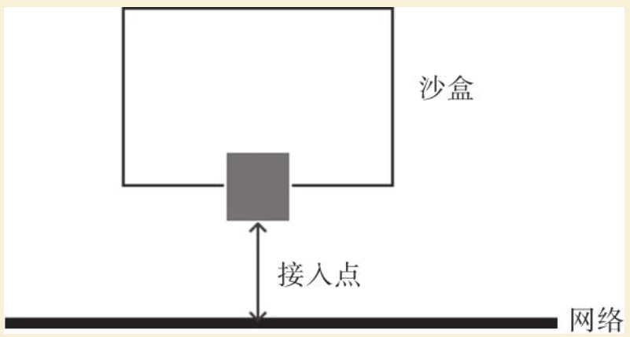

Contents
libnetwork插件化网络功能¶
从1.7.0版本开始，Docker正式把网络与存储这两部分的功能实现都以插件化形式剥离出来，允许用户通过指令来选择不同的后端实现。剥离出来的独立容器网络项目即为libnetwork项目。Docker希望将来能为不同类型的容器定义统一规范的网络层标准，支持多种操作系统平台，这也是Docker希望构建强大容器生态系统的一些积极的尝试。
本章将介绍libnetwork的概念和使用，包括容器网络模型、相关操作命令，以及具体如何利用libnetwork来构建跨主机的容器网络。
容器网络模型¶
libnetwork中容器网络模型（Container Networking Model，CNM）十分简洁和抽象，可以让其上层使用网络功能的容器最大程度地忽略底层具体实现。
容器网络模型的结构如图21-1所示。
图21-1 容器网络模型
容器网络模型包括三种基本元素：
·沙盒（Sandbox）：代表一个容器（准确地说，是其网络命名空间）；
·接入点（Endpoint）：代表网络上可以挂载容器的接口，会分配IP地址；
·网络（Network）：可以连通多个接入点的一个子网。
可见，对于使用CNM的容器管理系统来说，具体底下网络如何实现，不同子网彼此怎么隔离，有没有QoS，都不关心。只要插件能提供网络和接入点，只需把容器给接上或者拔下，剩下的都是插件驱动自己去实现，这样就解耦了容器和网络功能，十分灵活。
CNM的典型生命周期如图21-2所示：首先，驱动注册自己到网络控制器，网络控制器使用驱动类型，来创建网络；然后在创建的网络上创建接口；最后把容器连接到接口上即可。销毁过程则正好相反，先把容器从接入口上卸载，然后删除接入口和网络即可。

图21-2 CNM的典型生命周期
目前CNM支持的驱动类型有四种：Null、Bridge、Overlay、Remote，简单介绍如下：
·Null：不提供网络服务，容器启动后无网络连接；
·Bridge：就是Docker传统上默认用Linux网桥和Iptables实现的单机网络；
·Overlay：是用vxlan隧道实现的跨主机容器网络；
·Remote：扩展类型，预留给其他外部实现的方案，比如有一套第三方的SDN方案（如OpenStack Neutron）就可以接进来。
从位置上看，libnetwork往上提供容器支持，往下隐藏实现差异，自身处于十分关键的中间层。读者如果熟悉计算机网络协议模型的话，libnetwork可以类比为最核心的TCP/IP层。
目前，已有大量的网络方案开始支持libnetwork。包括OpenStack Kuryr项目，使用libnetwork，让Docker可以直接使用Neutron提供的网络功能。Calico等团队也编写了插件支持libnetwork，可以无缝地支持Docker高级网络功能。
Docker网络命令¶
在libnetwork支持下，Docker网络相关操作都作为network的子命令出现。
围绕着CNM生命周期的管理，主要包括以下命令：
·create：创建一个网络；
·connect：将容器接入到网络；
·disconnect：把容器从网络上断开；
·inspect：查看网络的详细信息。
·ls：列出所有的网络；
·prune：清理无用的网络资源；
·rm：删除一个网络。
1.创建网络
creat命令用于创建一个新的容器网络。Docker内置了bridge（默认使用）和overlay两种驱动，分别支持单主机和多主机场景。Docker服务在启动后，会默认创建一个bridge类型的网桥bridge。不同网络之间默认相互隔离。
创建网络命令格式为docker network create[OPTIONS]NETWORK。
支持参数包括：
·-attachable[=false]：支持手动容器挂载；
·-aux-address=map[]：辅助的IP地址；
·-config-from=””：从某个网络复制配置数据；
·-config-only[=false]：启用仅可配置模式；
·-d，-driver=“bridge”：网络驱动类型，如bridge或overlay；
·-gateway=[]：网关地址；
·-ingress[=false]：创建一个Swarm可路由的网状网络用于负载均衡，可将对某个服务的请求自动转发给一个合适的副本；
·-internal[=false]：内部模式，禁止外部对所创建网络的访问；
·-ip-range=[]：指定分配IP地址范围；
·-ipam-driver=“default”：IP地址管理的插件类型；
·-ipam-opt=map[]：IP地址管理插件的选项；
·-ipv6[=false]：支持IPv6地址；
·-label value：为网络添加元标签信息；
·-o，-opt=map[]：网络驱动所支持的选项；
·-scope=””：指定网络范围；
·-subnet=[]：网络地址段，CIDR格式，如172.17.0.0/16。
2.接入网络
connect命令将一个容器连接到一个已存在的网络上。连接到网络上的容器可以跟同一网络中其他容器互通，同一个容器可以同时接入多个网络。也可以在执行docker run命令时候通过-net参数指定容器启动后自动接入的网络。
接入网络命令格式为docker network connect[OPTIONS]NETWORK CONTAINER。
支持参数包括：
·-alias=[]：为容器添加一个别名，此别名仅在所添加网络上可见；
·-ip=””：指定IP地址，需要注意不能跟已接入的容器地址冲突；
·-ip6=””：指定IPv6地址；
·-link value：添加链接到另外一个容器；
·-link-local-ip=[]：为容器添加一个链接地址。
3.断开网络
disconnect命令将一个连接到网络上的容器从网络上断开连接。
命令格式为docker network disconnect[OPTIONS]NETWORK CONTAINER。
支持参数包括-f，-force：强制把容器从网络上移除。
4.查看网络信息
inspect命令用于查看一个网络的具体信息（JSON格式），包括接入的容器、网络配置信息等。
命令格式为docker network inspect[OPTIONS]NETWORK[NETWORK…]。
支持参数包括：
·-f，-format=””：给定一个Golang模板字符串，对输出结果进行格式化，如只查看地址配置可以用-f’{{.IPAM.Config}}’；
·-v，-verbose[=false]：输出调试信息。
5.列出网络
ls命令用于列出网络。命令格式为docker network ls[OPTIONS]，其中支持的选项主要有：
·-f，-filter=””：指定输出过滤器，如driver=bridge；
·-format=””：给定一个golang模板字符串，对输出结果进行格式化；
·-no-trunc[=false]：不截断地输出内容；
·-q，-quiet[=false]：安静模式，只打印网络的ID。
实际上，在不执行额外网络命令的情况下，用户执行docker network ls命令，一般情况下可以看到已创建的三个网络：
$ docker network ls
NETWORK ID NAME DRIVER
461e02c94370 bridge bridge
e4d5886b2d2f none null
adbc1879bac5 host host
分别为三种驱动的网络：null、host和bridge。
6.清理无用网络
prune命令用于清理已经没有容器使用的网络。
命令格式为docker network prune[OPTIONS][flags]，支持参数包括：
·-filter=””：指定选择过滤器；
·-f，-force：强制清理资源。
7.删除网络
rm命令用于删除指定的网络。当网络上没有容器连接上时，才会成功删除。
命令格式为docker network rm NETWORK[NETWORK…]。
构建跨主机容器网络¶
在这里，笔者将演示使用libnetwork自带的Overlay类型驱动来轻松实现跨主机的网络通信。Overlay驱动默认采用VXLAN协议，在IP地址可以互相访问的多个主机之间搭建隧道，让容器可以互相访问。
1.配置网络信息管理数据库
我们知道，在现实世界中，要连通不同的主机，需要交换机或路由器（跨子网时需要）这样的互联设备。这些设备一方面是在物理上起到连接作用，但更重要的是起到了网络管理的功能。例如，主机位置在什么地方，地址是多少等信息，都需要网络管理平面来维护。
在libnetwork的网络方案中，要实现跨主机容器网络，也需要类似的一个网络信息管理机制，只不过这个机制简单得多，只是一个键值数据库而已，如Consul、Etcd、ZooKeeper等工具都可以满足需求。
以Consul为例，启动一个progrium/consul容器，并映射服务到本地的8500端口，代码如下：
$ docker run -d \
-p "8500:8500" \
-h "consul" \
progrium/consul -server -bootstrap
1ad6b71cfdf83e1925d960b7c13f40294b7d84618828792a84069aea2e52770d
所在主机作为数据库节点。
2.配置Docker主机
启动两台Docker主机n1和n2，分别安装好最新的Docker-engine（1.7.0+）。确保这两台主机之间可以通过IP地址互相访问，另外，都能访问到数据库节点的8500端口。
配置主机的Docker服务启动选项如下：
DOCKER_OPTS="$DOCKER_OPTS --cluster-store=consul://<CONSUL_NODE>:8500 --cluster-advertise=eth0:2376"
重新启动Docker服务：
$ sudo service docker restart
3.创建网络
分别在n1和n2上查看现有的Docker网络，包括三个默认网络：分别为bridge、host和none类型：
n1:$ docker network ls
NETWORK ID NAME DRIVER
dc581a3eab4c bridge bridge
ee21a768c6f6 host host
8d1ee747b894 none null
n2:$ docker network ls
NETWORK ID NAME DRIVER
e7f24593bada bridge bridge
5bfae3a62214 host host
4adc19ad9bc7 none null
在任意节点上创建网络multi，例如在n1上执行如下命令即可完成对跨主机网络的创建：
n1:$ docker network create -d overlay multi
eadd374a18434a14c6171b778600507f300d330f4622067d3078009a58506c2d
创建成功后，可以同时在n1和n2上查看到新的网络multi的信息：
n1:$ docker network ls
NETWORK ID NAME DRIVER
dc581a3eab4c bridge bridge
ee21a768c6f6 host host
eadd374a1843 multi overlay
8d1ee747b894 none null
n2:$ docker network ls
NETWORK ID NAME DRIVER
e7f24593bada bridge bridge
5bfae3a62214 host host
eadd374a1843 multi overlay
4adc19ad9bc7 none null
此时，还可以通过docker network inspect命令查看网络的具体信息：
$ docker network inspect multi
[
{
"Name": "multi",
"Id":
"eadd374a18434a14c6171b778600507f300d330f4622067d3078009a58506c2d",
"Scope": "global",
"Driver": "overlay",
"EnableIPv6": false,
"IPAM": {
"Driver": "default",
"Options": {},
"Config": [
{
"Subnet": "10.0.0.0/24",
"Gateway": "10.0.0.1/24"
}
]
},
"Internal": false,
"Containers": {},
"Options": {},
"Labels": {}
}
]
4.测试网络
在n1上启动一个容器c1，通过–net选项指定连接到multi网络上。
查看网络信息，其中一个接口eth0已经连接到了multi网络上：
n1:$ docker run -it --name=c1 --net=multi busybox
/ # ip a
1: lo: <LOOPBACK,UP,LOWER_UP> mtu 65536 qdisc noqueue
link/loopback 00:00:00:00:00:00 brd 00:00:00:00:00:00
inet 127.0.0.1/8 scope host lo
valid_lft forever preferred_lft forever
inet6 ::1/128 scope host
valid_lft forever preferred_lft forever
72: eth0: <BROADCAST,MULTICAST,UP,LOWER_UP> mtu 1450 qdisc noqueue
link/ether 02:42:0a:00:00:02 brd ff:ff:ff:ff:ff:ff
inet 10.0.0.2/24 scope global eth0
valid_lft forever preferred_lft forever
inet6 fe80::42:aff:fe00:2/64 scope link
valid_lft forever preferred_lft forever
74: eth1: <BROADCAST,MULTICAST,UP,LOWER_UP> mtu 1500 qdisc noqueue
link/ether 02:42:ac:12:00:02 brd ff:ff:ff:ff:ff:ff
inet 172.18.0.2/16 scope global eth1
valid_lft forever preferred_lft forever
inet6 fe80::42:acff:fe12:2/64 scope link
valid_lft forever preferred_lft forever
在n2上启动一个容器c2，同样连接到multi网络上。
通过ping c1进行测试，可以访问到另外一台主机n1上的容器c1：
n2:$ docker run -it --name=c2 --net=multi busybox
/ # ping c1
PING c1 (10.0.0.2): 56 data bytes
64 bytes from 10.0.0.2: seq=0 ttl=64 time=0.705 ms
64 bytes from 10.0.0.2: seq=1 ttl=64 time=0.712 ms
64 bytes from 10.0.0.2: seq=2 ttl=64 time=0.629 ms
^C
--- c1 ping statistics ---
3 packets transmitted, 3 packets received, 0% packet lossround-trip min/avg/max = 0.629/0.682/0.712 ms
本章小结¶
本章介绍了Docker最新的网络功能和插件化网络工具：libnetwork。Docker在1.7.0之前主要支持本地主机网络，之后重点加强了跨主机通信网络能力。目前，Docker的功能已经从单主机上小规模服务场景，拓展到了大规模的集群场景甚至数据中心场景，为容器云场景提供了便利支持。从位置上看，libnetwork位于整个容器网络栈最核心的中间层。通过容器网络模型，libnetwork抽象了下层的网络实现，让其上容器可以无缝使用不同的底层网络支持技术。无论是物理网络还是虚拟网络，只要支持容器网络模型标准，即可被Docker容器所使用。
相比传统场景，容器自身的动态性、高密度都对网络技术带来了更多新的挑战。Docker从1.12.0开始将Swarm模式也内嵌到了引擎中，以提供对集群网络更好的支持。笔者相信，能否更好地利用好软件定义网络技术，将是容器在大规模集群场景下得到有效使用的关键。